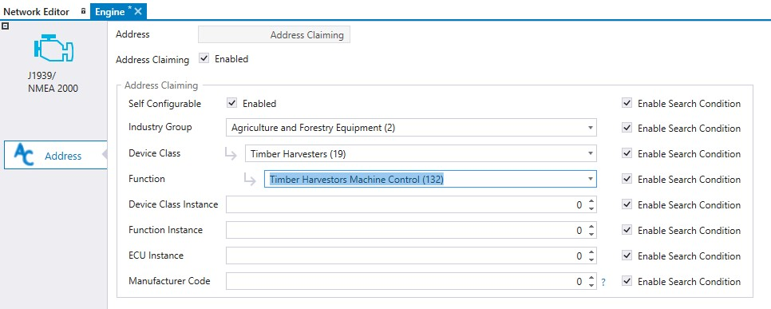

J1939/NMEA 2000 device address claiming should be initialized if J1939/NMEA 2000 device does not use fixed address and supports address claiming protocol.
To initialize J1939 device address claiming:
Double-click the correct J1939/NMEA 2000 device to open the device configuration.
Select Address Claiming Enabled.
Configure address claiming according the specification of J1939/NMEA 2000 device.
Select the address claiming fields which are used for identifying the device in J1939 network by selecting the corresponding Enable Search Condition.
|
Field |
Description |
|
Self Configurable |
Indicates if device can change it's initial address or not. Use always value 1 with ISOBUS devices |
|
Industry group |
Industry group, for example 2 = Agriculture and forestry equipment |
|
Device class |
Provides name for group of functions which are combined under same device class. For example 4 = planter and seeders |
|
Function |
Function for control function, for example 132 = Planters/Seeders Machine Control |
|
Device class instance |
Value is used to make difference for identical device classes in same network. 0 recommended. |
|
Function instance |
Value is used to make difference with several identical function instances. 0 recommended. |
|
ECU instance |
Value is used to make difference if there is several ECUs which together form a single function. 0 recommended (function is managed by one ECU). |
|
Manufacturer code |
Indicates the machine manufacturer (see www.sae.org for SAE Manufacturer Code Request). See also ISOBUS Data Dictionary http://dictionary.isobus.net/isobus/ > ISO 11783-1 Parameter group assignments: Complete list with details – PDF. |
Epec Oy reserves all rights for improvements without prior notice.
Source file topic200208.htm
Last updated 25-Jun-2025